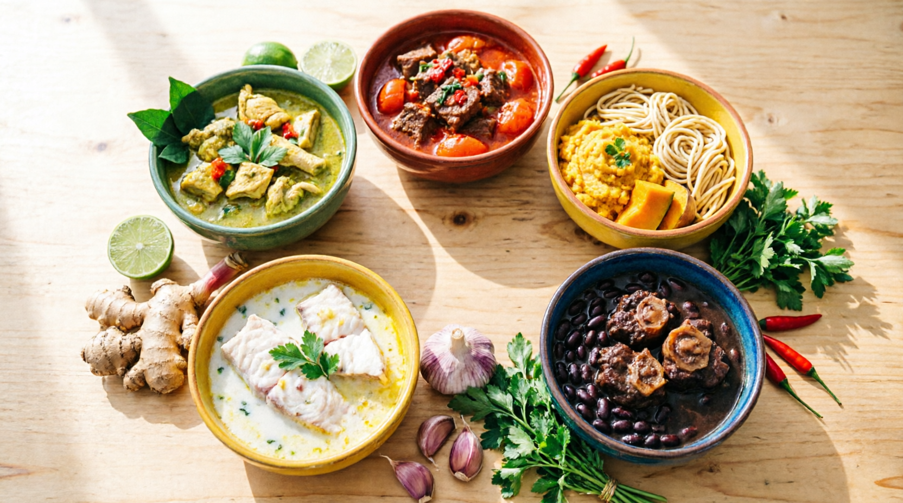

Il y a une sagesse que les anciens de Martinique partageaient sans le formuler ainsi : on ne mange pas seulement pour remplir son estomac. On mange pour se remettre d'aplomb. Pour retrouver son calme après une journée difficile. Pour se sentir ancré quand tout va trop vite.
La médecine traditionnelle chinoise a mis des mots sur cette intuition il y a plus de deux mille ans. Selon la théorie des 5 éléments (Wu Xing), chaque aliment est une information énergétique qui parle directement à vos organes et, à travers eux, à vos émotions. Ce que vous mangez influence ce que vous ressentez. Et ce que vous ressentez influence ce dont votre corps a besoin.
Le plus beau dans tout ça ? Votre cuisine créole a toujours eu, sans le savoir, exactement ce qu'il faut. Le citron pays pour libérer la colère. La margose pour calmer l'agitation. Le giromon pour stopper les ruminations. La christophine pour lâcher prise. Les pois noirs pour reconstruire ce que la peur a épuisé.
Voici cinq plats mijotés, ancrés dans le terroir martiniquais, pensés pour nourrir votre corps et réguler vos émotions. Un plat pour chaque élément. Un plat pour chaque état intérieur.
Le Foie est l'organe du Bois. Quand son énergie circule librement, vous vous sentez souple, créatif, capable d'avancer. Mais quand elle se bloque, sous l'effet du stress, d'une alimentation trop lourde ou d'un manque de mouvement, la colère monte. Pas forcément une colère explosive. Souvent, c'est cette irritabilité sourde que vous ne savez pas expliquer, cette impatience qui vous surprend vous-même, cette tension dans la nuque en fin de journée.
En médecine chinoise, on dit que "le Bois a besoin de s'étirer pour ne pas se casser". Nourrir votre Foie, c'est apprendre à laisser circuler ce qui est bloqué en vous. Et quand le Foie retrouve son harmonie, la colère se transforme en quelque chose de précieux : la capacité à se défendre avec calme, à voir loin, à prendre des décisions claires. C'est l'énergie du printemps 🌱, celle qui pousse vers l'avant sans forcer.
Si la colère et la tristesse font partie de votre quotidien, l'article Maîtrisez colère, tristesse et injustice : guide inspiré de Lao Tseu et Bouddha vous donnera des clés complémentaires pour transformer ces émotions en force intérieure.
Signes que votre élément Bois est déséquilibré :
La veille ou 2h avant, massez les cuisses de poulet avec le jus de 2 citrons pays, le tamarin dilué, l'ail pilé, l'oignon émincé, le thym, le piment et 2 c.à.s de colombo. L'acidité ne fait pas qu'attendrir la viande : elle "dénoue" le Foie et commence déjà à faire circuler le Qi stagnant.
Faites dorer le poulet dans une cocotte avec un peu d'huile, ajoutez le reste de la marinade et laissez caraméliser 5 minutes. Lavez et ciselez grossièrement les feuilles de madère en retirant les grosses tiges, puis ajoutez-les dans la cocotte. Elles vont tomber et réduire comme des épinards, libérant leur belle couleur vert foncé 💚. Ajoutez les bananes vertes coupées en tronçons, couvrez d'eau à hauteur, et laissez mijoter à feu doux 45 minutes jusqu'à ce que la sauce épaississe et que les bananes soient fondantes.
Le Cœur est l'organe du Feu. Une joie saine fait rayonner l'énergie, réchauffe les relations et donne envie de vivre pleinement. Mais quand le Feu "surchauffe", la joie bascule dans l'agitation : pensées qui s'emballent, difficulté à déconnecter le soir, insomnies, palpitations. Ce n'est plus de la joie, c'est de l'épuisement nerveux déguisé en activité.
On dit en médecine chinoise que "le Feu a besoin de substance pour brûler sans se consumer". Sans ancrage, la flamme brûle trop vite et laisse des cendres. Quand le Cœur retrouve son équilibre ❤️, l'agitation se transforme en présence sincère, en joie simple et stable, celle qui dure.
Signes que votre élément Feu est déséquilibré :
Commencez par préparer la margose : coupez-la en deux, ôtez les graines, détaillez-la en petits dés et faites-les blanchir 3 minutes à l'eau bouillante. L'amertume reste présente, mais devient agréable. Faites revenir la viande dans une cocotte avec un peu de roucou, ajoutez l'oignon, l'ail, le céleri pays et les tomates râpées. Laissez compoter 10 minutes pour obtenir une base rouge épaisse. Ajoutez les haricots rouges trempés, les dés de margose, le thym et 2 clous de girofle, couvrez d'eau ou de bouillon de bœuf, puis laissez mijoter à feu très doux pendant 1h30 à 2h00. La sauce doit devenir onctueuse et nappante 🍲.
La Rate est l'organe de la Terre. Son émotion, c'est le souci : cette tendance à ressasser, à tourner en boucle sur les mêmes pensées, à anticiper le pire sans pouvoir s'arrêter. Le stress chronique attaque en premier la Rate. Les signes ne trompent pas : digestion lente, ballonnements, fatigue après les repas, envies de sucre incontrôlables, et cette sensation désagréable d'avoir la tête dans le brouillard 🌫️.
En médecine chinoise, on dit que "la Terre a besoin d'être nourrie pour nourrir". Quand la Rate retrouve son équilibre, les ruminations se transforment en réflexion claire, en capacité à prendre soin des autres sans s'oublier. 🌻
Les ingrédients de ce plat font partie d'un arsenal nutritionnel plus large : découvrez comment d'autres super-aliments créoles peuvent soutenir votre vitalité au quotidien.
Signes que votre élément Terre est déséquilibré :
Faites revenir les morceaux de porc dans une cocotte avec l'oignon et l'ail émincés jusqu'à ce qu'ils soient bien dorés. Ajoutez le giromon et la patate douce, couvrez d'eau à hauteur, ajoutez le thym et le persil, salez et poivrez, puis portez à ébullition avant de baisser le feu. Pendant ce temps, préparez les dombrés : mélangez la farine, le sel et l'huile, ajoutez l'eau petit à petit en pétrissant à la main jusqu'à obtenir une pâte souple et non collante. Prélevez des petits morceaux, roulez-les en boules et jetez-les dans le bouillon bouillant 🫙. Couvrez et laissez mijoter 20 à 25 minutes sans soulever le couvercle.
Signes que votre élément Métal est déséquilibré :
Lavez le poisson au citron vert. Épluchez la christophine et coupez-la en cubes de 2 cm. Émincez finement le poireau, l'oignon, l'ail et le gingembre. Dans une sauteuse, faites revenir doucement tous ces aromatiques blancs dans un peu d'huile jusqu'à ce qu'ils soient tendres et très parfumés 🧄. Ajoutez les cubes de christophine, mouillez avec le lait de coco et un petit verre d'eau, ajoutez le thym et laissez mijoter 15 minutes. Déposez délicatement les morceaux de poisson dans la sauce blanche frémissante, couvrez et laissez pocher 10 minutes à feu très doux. Saupoudrez de cives ciselées et servez avec un bol de riz blanc 🍚.
Les Reins sont les organes de l'Eau. Ils gardent le Jing, votre réserve d'énergie vitale accumulée depuis la naissance. La peur, l'anxiété chronique, le manque de confiance en soi : ce sont les signaux que cette réserve s'épuise 🪫. En Martinique, le rythme de vie intense, la chaleur, le bruit permanent et le stress du quotidien puisent dans ce capital vital sans qu'on s'en rende compte.
On dit en médecine chinoise que "l'Eau est la source de toute vie". Quand les Reins sont épuisés, tout le reste vacille. Mais quand ils sont restaurés 💧, la peur se transforme en prudence sage, en ancrage profond, en cette confiance tranquille qui ne dépend pas des circonstances extérieures.
Si cette fatigue profonde vous touche, deux lectures peuvent vous aider : l'eau pure, source vitale d'hydratation et de santé optimale, et la sagesse millénaire des dauphins pour vaincre la fatigue mentale.
Signes que votre élément Eau est déséquilibré :
La veille, massez la queue de bœuf avec l'ail pilé, l'oignon émincé, le thym, le piment, le sel et la sauce soja. Dans une cocotte en fonte, faites dorer les morceaux à feu vif avec un peu de roucou et de gras jusqu'à ce qu'ils soient bien caramélisés et sombres 🍖. Ajoutez le reste de la marinade, les feuilles de bois d'Inde et couvrez d'eau chaude. Portez à ébullition, écumez, couvrez et laissez mijoter à feu très doux pendant 2h00. Ajoutez les pois noirs égouttés et poursuivez la cuisson 45 minutes à 1h00. En fin de cuisson, retirez le couvercle pour faire réduire la sauce jusqu'à ce qu'elle devienne brune, sombre, brillante et nappante ✨.
Vous n'avez pas besoin de tout changer d'un coup. Commencez par observer ce que vous ressentez, et laissez votre assiette vous répondre :
| Ce que vous ressentez 💭 | L'élément 🌿 | L'organe | Le plat 🍲 |
|---|---|---|---|
| Irritabilité, tension, colère rentrée 😤 | 🌿 Bois | Foie | Colombo de Poulet aux feuilles de madère |
| Agitation, insomnies, mental qui s'emballe 😰 | 🔥 Feu | Cœur | Ragoût de Bœuf aux haricots rouges et margose |
| Ruminations, anxiété digestive, brouillard mental 😟 | 🟡 Terre | Rate | Mijoté de Porc au giromon et dombrés |
| Tristesse, oppression, difficulté à lâcher prise 😔 | ⬜ Métal | Poumon | Fricassée de Capitaine à la christophine et coco |
| Peur, épuisement profond, manque de confiance 😶 | 🌊 Eau | Reins | Ragoût de Queue de Bœuf aux pois noirs |
Adapter la diététique taoïste des 5 éléments à la Martinique, c'est redécouvrir la richesse d'un terroir qui a toujours su prendre soin de ceux qui y vivent. Votre cuisine créole a toujours su prendre soin de vous. Elle attendait juste que vous l'écoutiez vraiment. 🌺
La théorie des 5 éléments (Wu Xing) est un système de correspondances de la médecine traditionnelle chinoise qui relie chaque organe du corps à un élément naturel (Bois, Feu, Terre, Métal, Eau), une émotion, une saveur et une couleur. Elle permet de comprendre les déséquilibres physiques et émotionnels pour mieux les rééquilibrer, notamment par l'alimentation.
Selon la diététique taoïste, la réponse dépend de la nature de votre stress. Si vous êtes irritable et tendu, le citron pays et les feuilles de madère (élément Bois) sont les plus efficaces. Si vous ruminez et vous inquiétez, le giromon et la patate douce (élément Terre) sont à privilégier. Si vous êtes épuisé en profondeur, les pois noirs et la queue de bœuf (élément Eau) reconstituent l'énergie vitale.
Oui, et c'est même l'objectif. Le terroir martiniquais offre naturellement des aliments qui correspondent à chacun des 5 éléments. L'idée n'est pas de suivre un régime strict, mais d'observer ses émotions dominantes et d'adapter ses repas en conséquence, en variant les plats au fil de la semaine selon ce que le corps réclame.
En médecine traditionnelle chinoise, la margose est associée à l'élément Feu et à sa saveur amère. Elle est utilisée depuis des siècles pour "descendre le Feu", c'est-à-dire calmer l'agitation cardiaque et protéger le système cardiovasculaire. Des études modernes confirment ses propriétés hypoglycémiantes et antioxydantes.
La nutrition occidentale analyse les aliments en termes de macronutriments et de micronutriments. La diététique taoïste les analyse en termes d'énergie (Qi), de saveur, de couleur et d'effet sur les organes et les émotions. Les deux approches sont complémentaires.
Les effets varient selon les personnes. Certaines ressentent un calme dès le premier repas. Pour des effets durables, une pratique régulière sur quatre à six semaines est recommandée, idéalement associée à d'autres pratiques de régulation comme la respiration ou la méditation.
Découvrez nos séances personnalisées et nos stages en groupe pour développer vos propres ressources anti-stress — même si vous vous sentez dépassé.
Découvrir la ZenBox →